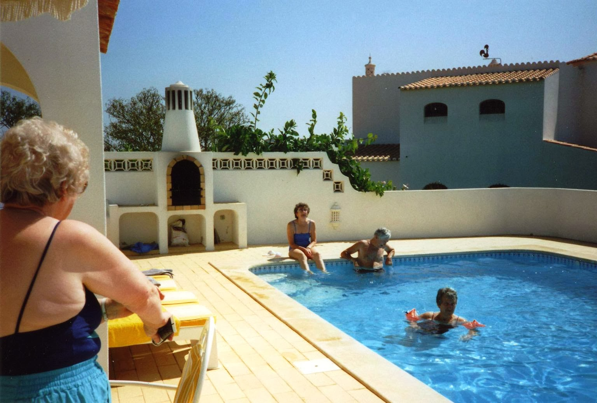
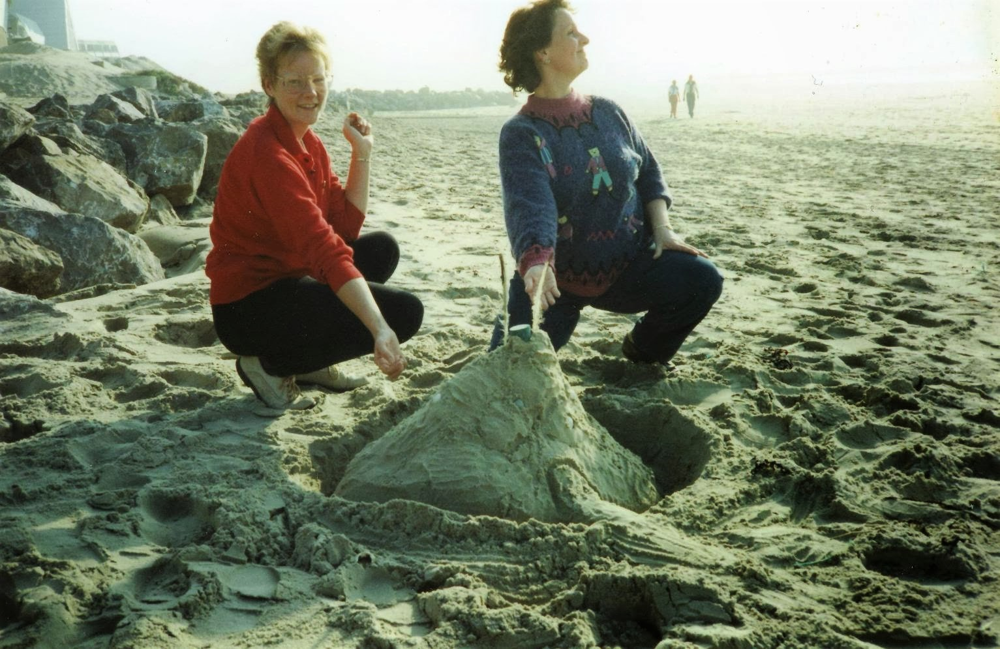
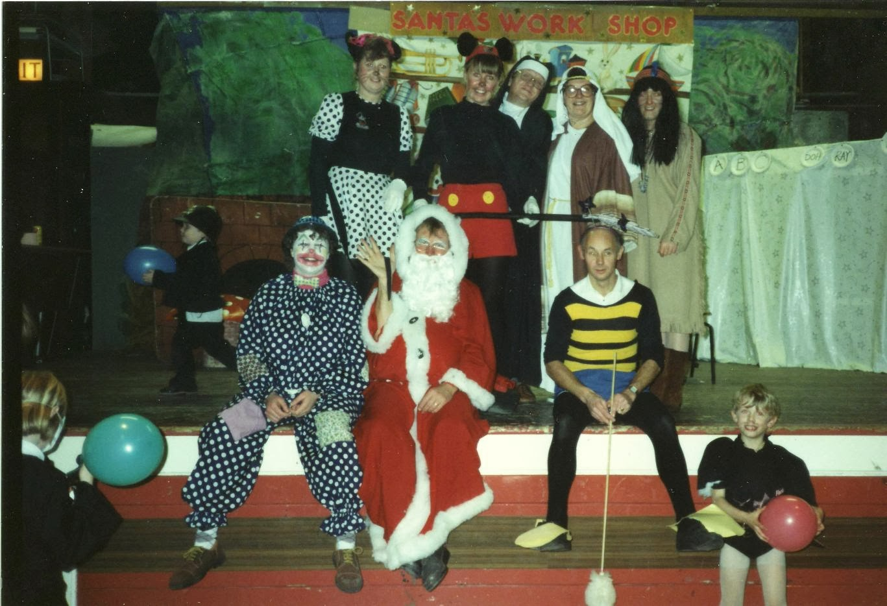

1990
Summer 1990
This being 1990, Dad was celebrating being 65 and Mum was 60, so they had a joint birthday celebration, inviting a few friends to the house for a few nibbles and a special joint birthday cake. Later in the year I joined Mum, Dad, Jean and Joan on holiday in Dick's villa just up the hill from Carvoeiro in the Algarve, Portugal. The villa is lovely, with a large living room, and smaller dining room, off which there is the kitchen. Mum and Dad took the master bedroom. There is a good size pool, with steps to walk in at the shallow end. The villa has its own mini barbie by the pool, and I just had to have a go at cooking on it for our dinner, complete with a glass of local vino of course. The pool was great for soaking your feet after a hard day relaxing. You could get up onto the roof of the villa from which you could see some lovely sunsets and have a view over the whole developmwnt towards the sea.
{kind=link}
The beach in town, Praia de Carvoeiro, is quite small and had fishing boats moored on it, and has a mini town square leading up to it. Up the hill above the beach is the Forte de Nossa Senhora de Encarnação which used to be a fort guarding the coastline, but was mostly destroyed in an earthquake, leaving just the chapel in use. A quick walk along the clifftop and you reach the very local tourist spot of Algar Seco. The Algar Seco are a series of cliff formations carved out of the limestone bedrock. There used to be an archway at the top but that has eroded with time. At the bottom of a flight of steps, there is a cave known as A Boneca.
 Our normal routine every other day was to walk down to the new Municipal Market, where we could buy fish, meat, cheese and vegetables. Then we walked down into town to buy an English paper near to the bank . We also stopped for a cup of coffee/glass of white wine at the coffee shop run by a British lady who has lived in the town for many years. On those days we didn't need to shop, we had elevenses next to the pool. For the wrinklies, there was always a siesta after lunch, sometimes inside on the sofa. On one of the cloudier days, we took the short drive to the nearby town of Portimao and resort of Praia da Rocha. Another day we drove up into the hills to Monchique where we had lunch. Another destinaion was Armaçao da Pera
{kind=link}
Autumn 1990
Mum and Dad came up to spend a weekend with me, and we had a day out to Matlock. We went up in the cable car to the top of the Heights of Abraham. There is a Tower at the top, the Victoria Prospect Tower. It was built in 1844 for the early Victorian tourists and restored in 1978. You can climb the Tower to enjoy panoramic views of the surrounding Derbyshire countryside. We gave the Great Masson Cavern a miss as Mum is a little claustraphobic at times. A little later on in the year, Phil, Anne, Elaine and I went on a day trip to Boulogne and Le Touquet, including a booze trip to the supermarket. We had a good look around the market in Boulogne. We had great fun building sand castles on the beach. We decided against the trip of the Petit Train as we wandered along the prom. After lunch, we discovered a fabulous patisserie shop, with the most gorgeous cakes and fancy chocolates in Le Touquet Town.
{kind=link}
At the end of the year was the Barracks Fabrics Staff's Children's Christmas Party. An annual event, this year I was asked to write a panto for us to stage. There was a restriction on the storyline. I had to use the fancy dress costumes we had available. So the story was:- Santa Claus had had his presents stolen by an evil Bumble Bee. Mickey and Minnie Mouse arrived to help Santa and his workers, Minnie HaHa, a nun, and a Clown, to recapture the pressies. I was the narrator and dressed as an Arab Sheik. I didn't have time to write actual lines, only the story, so it was totally ad-libbed, and needed the narrator to keep things moving in the right direction. After the story finished, the kids came up on stage to throw custard pies at a couple of the staff, play some party games, and collect their presents, before having a special tea.